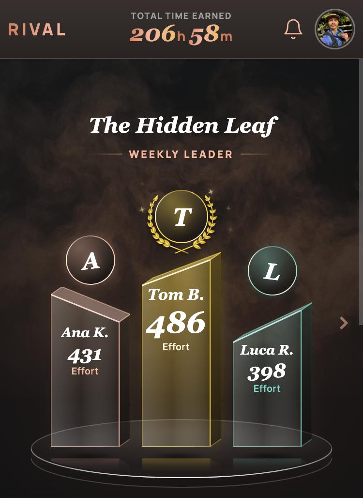
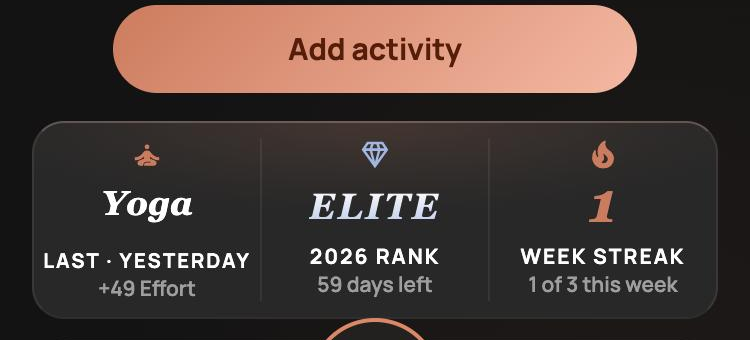

Now · built
What's in the app now: the gap to the person just ahead as the headline, your place small in the countdown line.
A · Place first
Your place is the headline in big serif, of 12 beside it; the gap to Sandy under it, smaller; then the countdown.

8thOF 12
100Behind Sandy M.
7 DAYS REMAINING

B · Side by side
Place and gap as two figures the same size, split by a hairline, like the stat row below. Then the countdown.
C · Place alone
Only the place is big. The gap moves into the small line with the countdown.
8thOF 12
100BEHIND SANDY M.·7 DAYS LEFT